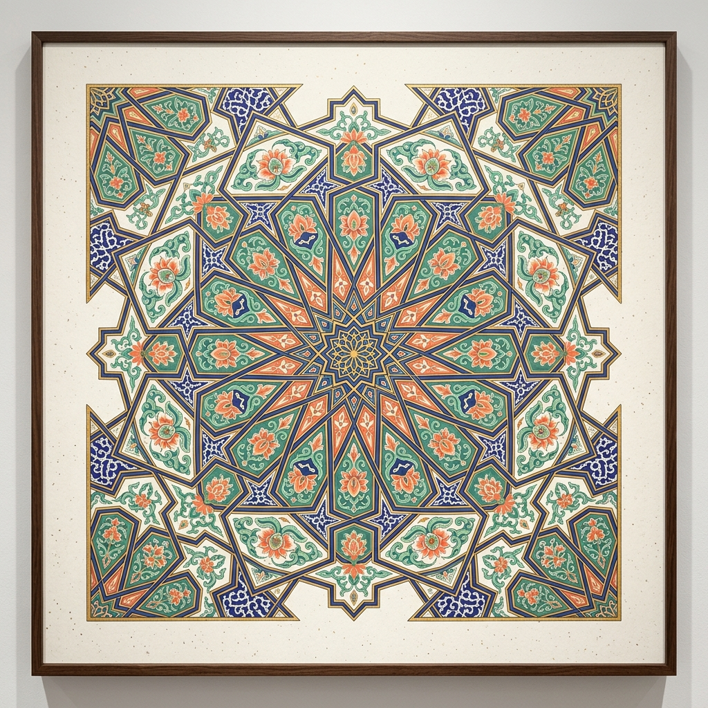
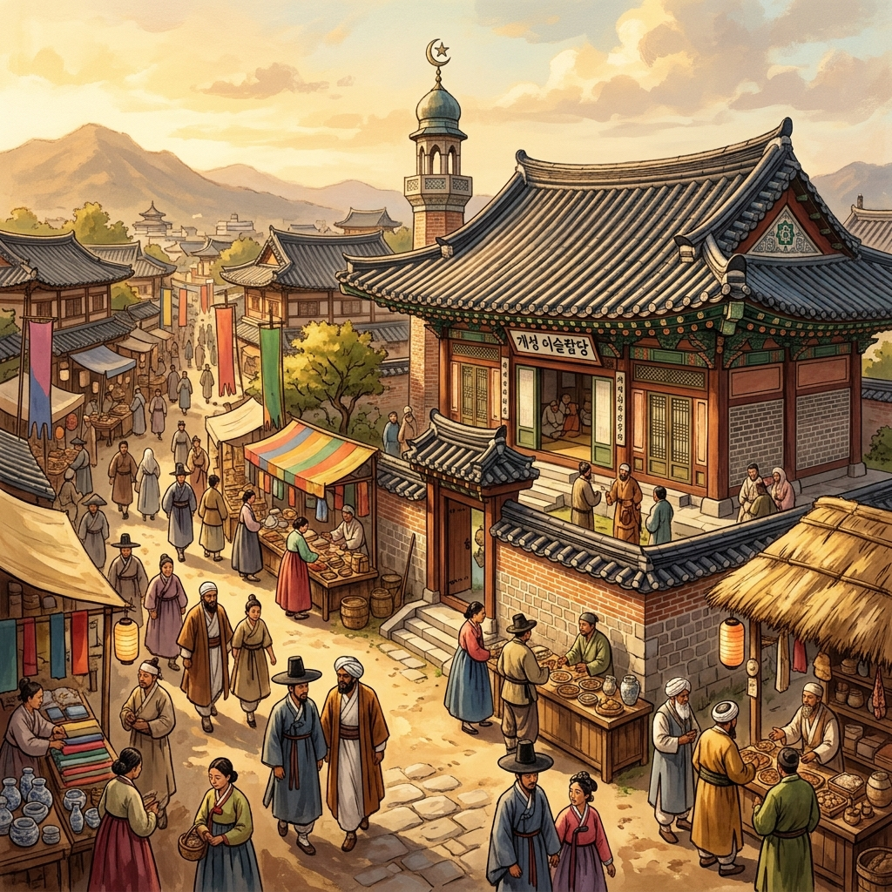
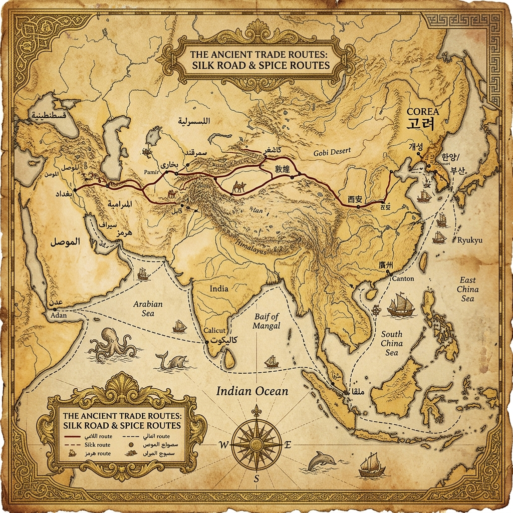
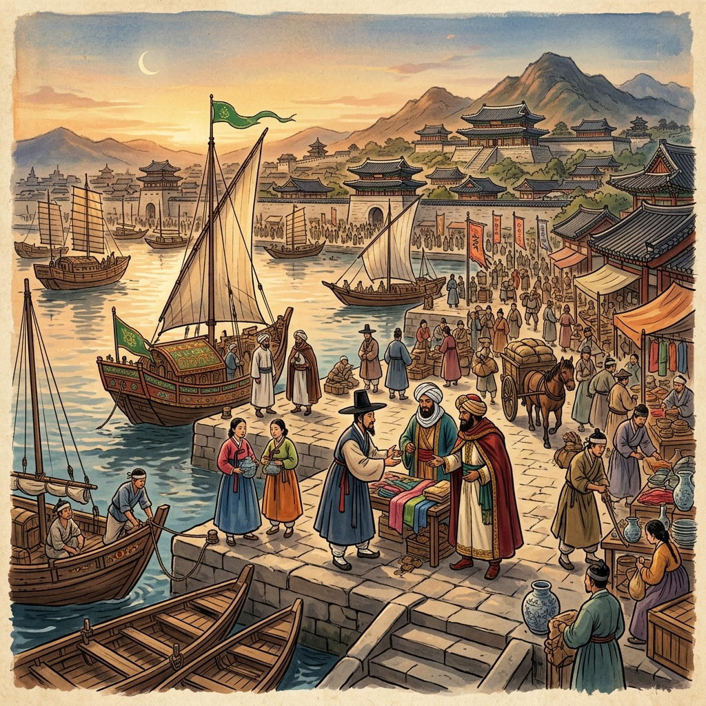
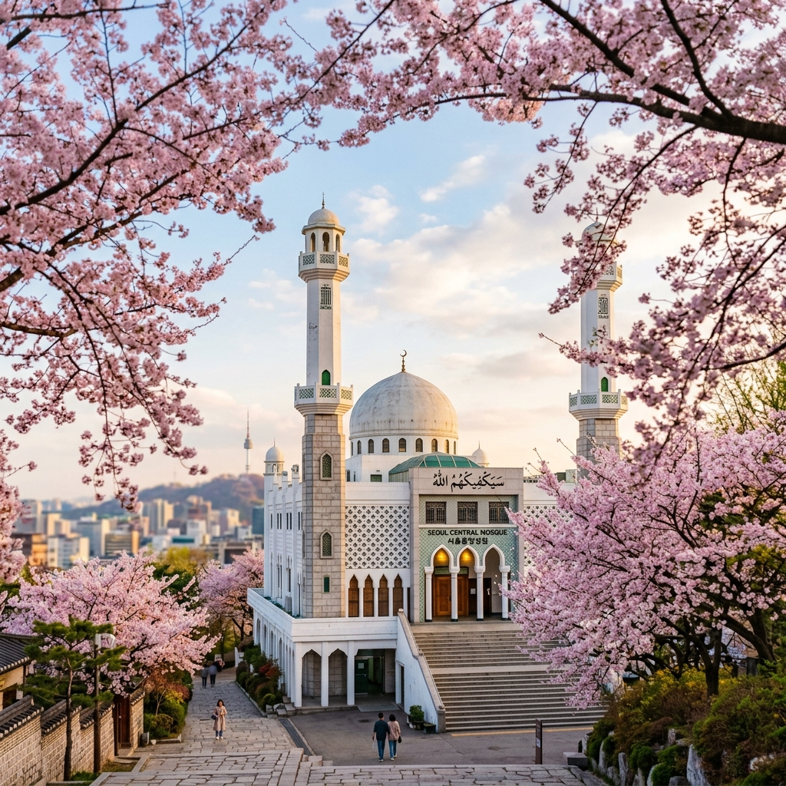
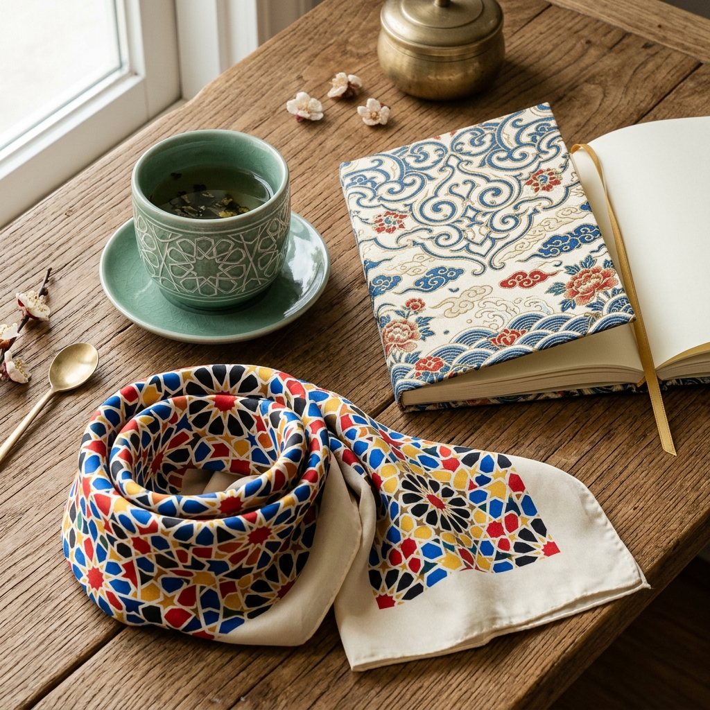

Hui Hui Gwan · 회회관
Uncovering the rich but hidden history of Islam in Korea — through beauty, storytelling, and cultural connection. Not something foreign, but something woven into your own story.

Hui Hui Gwan (回回館) — literally the "House of the Hui Hui" — takes its name from the historical term used in East Asia to refer to Muslim communities. In Korea, these communities once thrived.
On this platform, we bring together — in a thoughtful and careful manner — writings, photographs, works of art, designs, historical notes, and cultural reflections relating to the shared heritage of Islam and Korea. We are not here to lecture, but to spark curiosity and warm hearts through beauty, storytelling, and cultural connection.
回回 (Hui Hui / 회회) was the historical term used across East Asia to refer to Muslims — derived from the Uyghur word for Muslim communities. In Korean records from the Goryeo Dynasty (918–1392), these people were documented as traders, astronomers, healers, and court officials who helped shape the peninsula's golden era.
Share the surprisingly rich but little-known history of Islam in Korea — from the first Arab traders in 1024 to the Muslim astronomers of the Goryeo court.
Design social media content for Instagram, TikTok, and Facebook that reaches young Koreans — sparking curiosity through beauty and storytelling, not pressure.
Design heritage products that blend Islamic and Korean aesthetics — celadon with arabesque, hanbok with geometric motifs — making this a self-sustaining ṣadaqa jāriya.

Trace the journey of Muslim travelers, merchants, scholars, and families who left their mark on Korean history across a millennium.

FeaturedIn September 1024, the first official delegation of Muslim traders arrived at the Goryeo court. They came from the lands of Dashi (大食) — the Abbasid Caliphate — and they would not leave. What they brought with them would change Korean astronomy, cuisine, and even genetics forever.
Read the full story →
CultureThe distillation technique behind Korea's beloved soju (소주) traces back to Middle Eastern arak, brought to the peninsula through Mongol channels during the 13th century.
Read more →
HeritageThe Deoksu Jang clan (덕수 장씨) traces its origins to a Muslim official from Central Asia who served the Goryeo court in the 13th century.
Read more →Photographs, art, and design that trace the aesthetic threads connecting Islamic and Korean traditions.
Carefully crafted items that blend Islamic and Korean design traditions — every purchase sustains this ongoing charity.
Traditional Korean celadon craft meets Islamic geometric star patterns — a tea set that tells a thousand-year story in jade-green glaze.
Museum-quality giclée print merging Korean dancheong (단청) temple art with Islamic interlocking geometry. Limited edition, numbered and signed.
A luxurious silk scarf featuring the ancient maritime routes that connected the Muslim world to Korea — wearable history in gold and indigo.
Content That Sparks Curiosity
Short-form content designed for Instagram, TikTok, and Facebook — reaching young Koreans with beauty, storytelling, and cultural connection.